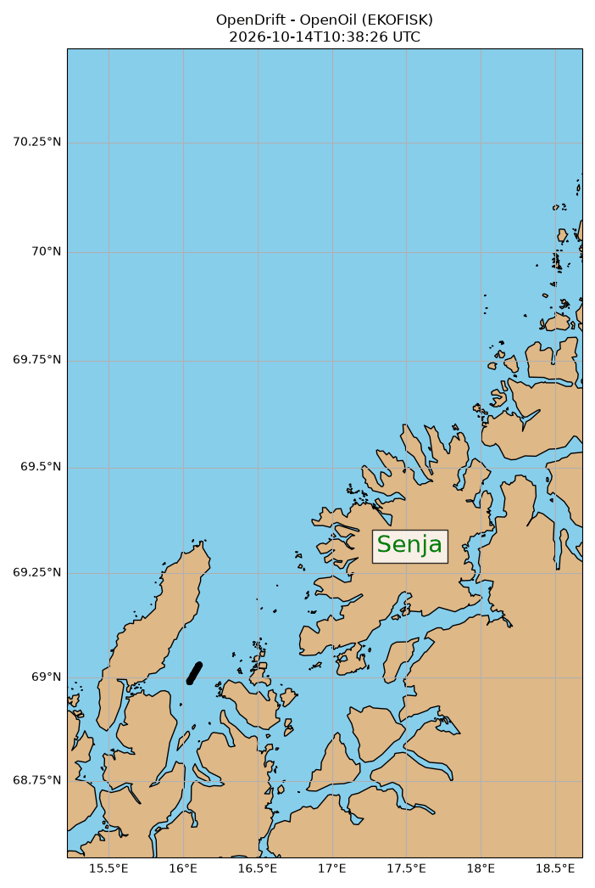
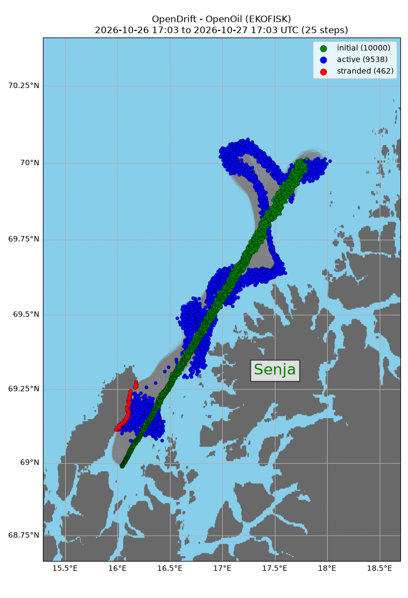

Note
Go to the end to download the full example code.
Cone seeding
17:03:30 INFO opendrift:569: OpenDriftSimulation initialised (version 1.14.11 / v1.14.12-66-g07283eb)
Using live data from Thredds
o.add_readers_from_list([
'https://thredds.met.no/thredds/dodsC/fou-hi/norkystv3_800m_m00_be'])
Adjusting some configuration
o.set_config('processes:dispersion', True)
o.set_config('processes:evaporation', False)
o.set_config('processes:emulsification', True)
Seed elements along cone, e.g. ship track with increasing uncertainty in position
latstart = 68.988911
lonstart = 16.040701
latend = 69.991446
lonend = 17.760061
time = [datetime.utcnow(), datetime.utcnow() + timedelta(hours=12)]
o.seed_cone(lon=[lonstart, lonend], lat=[latstart, latend],
oil_type='EKOFISK', radius=[100, 800], number=10000, time=[time])
print(o)
/root/project/examples/example_cone.py:31: DeprecationWarning: datetime.datetime.utcnow() is deprecated and scheduled for removal in a future version. Use timezone-aware objects to represent datetimes in UTC: datetime.datetime.now(datetime.UTC).
time = [datetime.utcnow(), datetime.utcnow() + timedelta(hours=12)]
17:03:30 INFO opendrift.models.basemodel.environment:203: Adding a global landmask from GSHHG
17:03:36 INFO opendrift.models.basemodel.environment:227: Fallback values will be used for the following variables which have no readers:
17:03:36 INFO opendrift.models.basemodel.environment:230: sea_surface_height: 0.000000
17:03:36 INFO opendrift.models.basemodel.environment:230: upward_sea_water_velocity: 0.000000
17:03:36 INFO opendrift.models.basemodel.environment:230: sea_surface_wave_significant_height: 0.000000
17:03:36 INFO opendrift.models.basemodel.environment:230: sea_surface_wave_stokes_drift_x_velocity: 0.000000
17:03:36 INFO opendrift.models.basemodel.environment:230: sea_surface_wave_stokes_drift_y_velocity: 0.000000
17:03:36 INFO opendrift.models.basemodel.environment:230: sea_surface_wave_period_at_variance_spectral_density_maximum: 0.000000
17:03:36 INFO opendrift.models.basemodel.environment:230: sea_surface_wave_mean_period_from_variance_spectral_density_second_frequency_moment: 0.000000
17:03:36 INFO opendrift.models.basemodel.environment:230: sea_ice_area_fraction: 0.000000
17:03:36 INFO opendrift.models.basemodel.environment:230: sea_ice_x_velocity: 0.000000
17:03:36 INFO opendrift.models.basemodel.environment:230: sea_ice_y_velocity: 0.000000
17:03:36 INFO opendrift.models.basemodel.environment:230: sea_water_temperature: 10.000000
17:03:36 INFO opendrift.models.basemodel.environment:230: sea_water_salinity: 34.000000
17:03:36 INFO opendrift.models.basemodel.environment:230: sea_floor_depth_below_sea_level: 10000.000000
17:03:36 INFO opendrift.models.basemodel.environment:230: horizontal_diffusivity: 0.000000
17:03:36 INFO opendrift.models.basemodel.environment:230: ocean_vertical_diffusivity: 0.020000
17:03:36 INFO opendrift.models.basemodel.environment:230: ocean_mixed_layer_thickness: 50.000000
17:03:36 INFO opendrift.models.openoil.adios.dirjs:86: Querying ADIOS database for oil: EKOFISK
17:03:36 WARNING opendrift.models.openoil.adios.dirjs:90: Several oils found with name: EKOFISK: ['AD00328', 'AD00329', 'AD00332', 'AD00333', 'AD01944', 'AD02094', 'AD02463', 'AD02558', 'NO00013', 'NO00014', 'NO00015', 'NO00016'], using first.
17:03:36 INFO opendrift.models.openoil.openoil:1731: Using density 809.002835 and viscosity 3.3498550728972226e-06 of oiltype EKOFISK
===========================
Model: OpenOil (OpenDrift version 1.14.11)
0 active Oil particles (0 deactivated, 10000 scheduled)
-------------------
Environment variables:
-----
land_binary_mask
1) global_landmask
-----
Readers not added for the following variables:
horizontal_diffusivity
ocean_mixed_layer_thickness
ocean_vertical_diffusivity
sea_floor_depth_below_sea_level
sea_ice_area_fraction
sea_ice_x_velocity
sea_ice_y_velocity
sea_surface_height
sea_surface_wave_mean_period_from_variance_spectral_density_second_frequency_moment
sea_surface_wave_period_at_variance_spectral_density_maximum
sea_surface_wave_significant_height
sea_surface_wave_stokes_drift_x_velocity
sea_surface_wave_stokes_drift_y_velocity
sea_water_salinity
sea_water_temperature
upward_sea_water_velocity
x_sea_water_velocity
x_wind
y_sea_water_velocity
y_wind
---
Lazy readers:
LazyReader: https://thredds.met.no/thredds/dodsC/fou-hi/norkystv3_800m_m00_be
Discarded readers:
===========================
Running model for 24 hours
o.run(steps=24*2, time_step=1800, time_step_output=3600)
17:03:36 INFO opendrift:1911: Skipping environment variable upward_sea_water_velocity because of condition ['drift:vertical_advection', 'is', False]
17:03:36 INFO opendrift:1922: Storing previous values of element property lon because of condition (('general:coastline_action', 'in', ['stranding', 'previous']), 'or', ('general:seafloor_action', 'in', ['previous']))
17:03:36 INFO opendrift:1922: Storing previous values of element property lat because of condition (('general:coastline_action', 'in', ['stranding', 'previous']), 'or', ('general:seafloor_action', 'in', ['previous']))
17:03:37 INFO opendrift:958: Using existing reader for land_binary_mask to move elements to ocean
17:03:37 INFO opendrift:990: All points are in ocean
17:03:37 INFO opendrift.models.openoil.openoil:697: Oil-water surface tension is 0.027884 Nm
17:03:37 INFO opendrift.models.openoil.openoil:710: Max water fraction not available for EKOFISK, using default
17:03:37 INFO opendrift:2238: 2026-10-26 17:03:30.968029 - step 1 of 48 - 417 active elements (0 deactivated)
17:03:37 INFO opendrift.readers:67: Opening file with xr.open_dataset
17:03:39 INFO opendrift.readers.reader_netCDF_CF_generic:340: Detected dimensions: {'x': 'X', 'y': 'Y', 'z': 'depth', 'time': 'time'}
17:03:39 INFO opendrift.readers.basereader:175: Variable x_sea_water_velocity will be rotated from eastward_sea_water_velocity
17:03:39 INFO opendrift.readers.basereader:175: Variable y_sea_water_velocity will be rotated from northward_sea_water_velocity
17:03:39 INFO opendrift.readers.basereader:175: Variable x_wind will be rotated from eastward_wind
17:03:39 INFO opendrift.readers.basereader:175: Variable y_wind will be rotated from northward_wind
17:03:44 INFO opendrift:2238: 2026-10-26 17:33:30.968029 - step 2 of 48 - 834 active elements (0 deactivated)
17:03:44 INFO opendrift:2238: 2026-10-26 18:03:30.968029 - step 3 of 48 - 1250 active elements (0 deactivated)
17:03:46 WARNING opendrift.readers.basereader.structured:324: Data block from https://thredds.met.no/thredds/dodsC/fou-hi/norkystv3_800m_m00_be not large enough to cover element positions within timestep. Buffer size (8) must be increased. See `Variables.set_buffer_size`.
17:03:46 INFO opendrift:2238: 2026-10-26 18:33:30.968029 - step 4 of 48 - 1667 active elements (0 deactivated)
17:03:46 WARNING opendrift.readers.basereader.structured:324: Data block from https://thredds.met.no/thredds/dodsC/fou-hi/norkystv3_800m_m00_be not large enough to cover element positions within timestep. Buffer size (8) must be increased. See `Variables.set_buffer_size`.
17:03:46 INFO opendrift:2238: 2026-10-26 19:03:30.968029 - step 5 of 48 - 2084 active elements (0 deactivated)
17:03:48 WARNING opendrift.readers.basereader.structured:324: Data block from https://thredds.met.no/thredds/dodsC/fou-hi/norkystv3_800m_m00_be not large enough to cover element positions within timestep. Buffer size (8) must be increased. See `Variables.set_buffer_size`.
17:03:49 INFO opendrift:2238: 2026-10-26 19:33:30.968029 - step 6 of 48 - 2500 active elements (0 deactivated)
17:03:49 WARNING opendrift.readers.basereader.structured:324: Data block from https://thredds.met.no/thredds/dodsC/fou-hi/norkystv3_800m_m00_be not large enough to cover element positions within timestep. Buffer size (8) must be increased. See `Variables.set_buffer_size`.
17:03:49 INFO opendrift:2238: 2026-10-26 20:03:30.968029 - step 7 of 48 - 2917 active elements (0 deactivated)
17:03:53 WARNING opendrift.readers.basereader.structured:324: Data block from https://thredds.met.no/thredds/dodsC/fou-hi/norkystv3_800m_m00_be not large enough to cover element positions within timestep. Buffer size (8) must be increased. See `Variables.set_buffer_size`.
17:03:53 INFO opendrift:2238: 2026-10-26 20:33:30.968029 - step 8 of 48 - 3334 active elements (0 deactivated)
17:03:53 WARNING opendrift.readers.basereader.structured:324: Data block from https://thredds.met.no/thredds/dodsC/fou-hi/norkystv3_800m_m00_be not large enough to cover element positions within timestep. Buffer size (8) must be increased. See `Variables.set_buffer_size`.
17:03:53 INFO opendrift:2238: 2026-10-26 21:03:30.968029 - step 9 of 48 - 3750 active elements (0 deactivated)
17:04:00 WARNING opendrift.readers.basereader.structured:324: Data block from https://thredds.met.no/thredds/dodsC/fou-hi/norkystv3_800m_m00_be not large enough to cover element positions within timestep. Buffer size (8) must be increased. See `Variables.set_buffer_size`.
17:04:00 INFO opendrift:2238: 2026-10-26 21:33:30.968029 - step 10 of 48 - 4167 active elements (0 deactivated)
17:04:00 WARNING opendrift.readers.basereader.structured:324: Data block from https://thredds.met.no/thredds/dodsC/fou-hi/norkystv3_800m_m00_be not large enough to cover element positions within timestep. Buffer size (8) must be increased. See `Variables.set_buffer_size`.
17:04:00 INFO opendrift:2238: 2026-10-26 22:03:30.968029 - step 11 of 48 - 4583 active elements (0 deactivated)
17:04:05 WARNING opendrift.readers.basereader.structured:324: Data block from https://thredds.met.no/thredds/dodsC/fou-hi/norkystv3_800m_m00_be not large enough to cover element positions within timestep. Buffer size (8) must be increased. See `Variables.set_buffer_size`.
17:04:06 INFO opendrift:2238: 2026-10-26 22:33:30.968029 - step 12 of 48 - 5000 active elements (0 deactivated)
17:04:06 WARNING opendrift.readers.basereader.structured:324: Data block from https://thredds.met.no/thredds/dodsC/fou-hi/norkystv3_800m_m00_be not large enough to cover element positions within timestep. Buffer size (8) must be increased. See `Variables.set_buffer_size`.
17:04:06 INFO opendrift:2238: 2026-10-26 23:03:30.968029 - step 13 of 48 - 5417 active elements (0 deactivated)
17:04:12 WARNING opendrift.readers.basereader.structured:324: Data block from https://thredds.met.no/thredds/dodsC/fou-hi/norkystv3_800m_m00_be not large enough to cover element positions within timestep. Buffer size (8) must be increased. See `Variables.set_buffer_size`.
17:04:12 INFO opendrift:2238: 2026-10-26 23:33:30.968029 - step 14 of 48 - 5833 active elements (0 deactivated)
17:04:12 WARNING opendrift.readers.basereader.structured:324: Data block from https://thredds.met.no/thredds/dodsC/fou-hi/norkystv3_800m_m00_be not large enough to cover element positions within timestep. Buffer size (8) must be increased. See `Variables.set_buffer_size`.
17:04:12 INFO opendrift:2238: 2026-10-27 00:03:30.968029 - step 15 of 48 - 6250 active elements (0 deactivated)
17:04:16 WARNING opendrift.readers.basereader.structured:324: Data block from https://thredds.met.no/thredds/dodsC/fou-hi/norkystv3_800m_m00_be not large enough to cover element positions within timestep. Buffer size (8) must be increased. See `Variables.set_buffer_size`.
17:04:16 INFO opendrift:2238: 2026-10-27 00:33:30.968029 - step 16 of 48 - 6667 active elements (0 deactivated)
17:04:16 WARNING opendrift.readers.basereader.structured:324: Data block from https://thredds.met.no/thredds/dodsC/fou-hi/norkystv3_800m_m00_be not large enough to cover element positions within timestep. Buffer size (8) must be increased. See `Variables.set_buffer_size`.
17:04:16 INFO opendrift:2238: 2026-10-27 01:03:30.968029 - step 17 of 48 - 7083 active elements (0 deactivated)
17:04:21 WARNING opendrift.readers.basereader.structured:324: Data block from https://thredds.met.no/thredds/dodsC/fou-hi/norkystv3_800m_m00_be not large enough to cover element positions within timestep. Buffer size (8) must be increased. See `Variables.set_buffer_size`.
17:04:21 INFO opendrift:2238: 2026-10-27 01:33:30.968029 - step 18 of 48 - 7500 active elements (0 deactivated)
17:04:21 WARNING opendrift.readers.basereader.structured:324: Data block from https://thredds.met.no/thredds/dodsC/fou-hi/norkystv3_800m_m00_be not large enough to cover element positions within timestep. Buffer size (8) must be increased. See `Variables.set_buffer_size`.
17:04:21 INFO opendrift:2238: 2026-10-27 02:03:30.968029 - step 19 of 48 - 7916 active elements (0 deactivated)
17:04:27 WARNING opendrift.readers.basereader.structured:324: Data block from https://thredds.met.no/thredds/dodsC/fou-hi/norkystv3_800m_m00_be not large enough to cover element positions within timestep. Buffer size (8) must be increased. See `Variables.set_buffer_size`.
17:04:28 INFO opendrift:2238: 2026-10-27 02:33:30.968029 - step 20 of 48 - 8333 active elements (0 deactivated)
17:04:28 WARNING opendrift.readers.basereader.structured:324: Data block from https://thredds.met.no/thredds/dodsC/fou-hi/norkystv3_800m_m00_be not large enough to cover element positions within timestep. Buffer size (8) must be increased. See `Variables.set_buffer_size`.
17:04:28 INFO opendrift:2238: 2026-10-27 03:03:30.968029 - step 21 of 48 - 8750 active elements (0 deactivated)
17:04:32 WARNING opendrift.readers.basereader.structured:324: Data block from https://thredds.met.no/thredds/dodsC/fou-hi/norkystv3_800m_m00_be not large enough to cover element positions within timestep. Buffer size (8) must be increased. See `Variables.set_buffer_size`.
17:04:32 INFO opendrift:2238: 2026-10-27 03:33:30.968029 - step 22 of 48 - 9166 active elements (0 deactivated)
17:04:32 WARNING opendrift.readers.basereader.structured:324: Data block from https://thredds.met.no/thredds/dodsC/fou-hi/norkystv3_800m_m00_be not large enough to cover element positions within timestep. Buffer size (8) must be increased. See `Variables.set_buffer_size`.
17:04:33 INFO opendrift:2238: 2026-10-27 04:03:30.968029 - step 23 of 48 - 9583 active elements (0 deactivated)
17:04:36 WARNING opendrift.readers.basereader.structured:324: Data block from https://thredds.met.no/thredds/dodsC/fou-hi/norkystv3_800m_m00_be not large enough to cover element positions within timestep. Buffer size (8) must be increased. See `Variables.set_buffer_size`.
17:04:37 INFO opendrift:2238: 2026-10-27 04:33:30.968029 - step 24 of 48 - 10000 active elements (0 deactivated)
17:04:37 WARNING opendrift.readers.basereader.structured:324: Data block from https://thredds.met.no/thredds/dodsC/fou-hi/norkystv3_800m_m00_be not large enough to cover element positions within timestep. Buffer size (8) must be increased. See `Variables.set_buffer_size`.
17:04:37 INFO opendrift:2238: 2026-10-27 05:03:30.968029 - step 25 of 48 - 10000 active elements (0 deactivated)
17:04:42 WARNING opendrift.readers.basereader.structured:324: Data block from https://thredds.met.no/thredds/dodsC/fou-hi/norkystv3_800m_m00_be not large enough to cover element positions within timestep. Buffer size (8) must be increased. See `Variables.set_buffer_size`.
17:04:42 INFO opendrift:2238: 2026-10-27 05:33:30.968029 - step 26 of 48 - 10000 active elements (0 deactivated)
17:04:42 WARNING opendrift.readers.basereader.structured:324: Data block from https://thredds.met.no/thredds/dodsC/fou-hi/norkystv3_800m_m00_be not large enough to cover element positions within timestep. Buffer size (8) must be increased. See `Variables.set_buffer_size`.
17:04:43 INFO opendrift:2238: 2026-10-27 06:03:30.968029 - step 27 of 48 - 9998 active elements (2 deactivated)
17:04:46 INFO opendrift:2238: 2026-10-27 06:33:30.968029 - step 28 of 48 - 9989 active elements (11 deactivated)
17:04:47 INFO opendrift:2238: 2026-10-27 07:03:30.968029 - step 29 of 48 - 9971 active elements (29 deactivated)
17:04:51 INFO opendrift:2238: 2026-10-27 07:33:30.968029 - step 30 of 48 - 9936 active elements (64 deactivated)
17:04:51 INFO opendrift:2238: 2026-10-27 08:03:30.968029 - step 31 of 48 - 9908 active elements (92 deactivated)
17:04:56 INFO opendrift:2238: 2026-10-27 08:33:30.968029 - step 32 of 48 - 9891 active elements (109 deactivated)
17:04:57 INFO opendrift:2238: 2026-10-27 09:03:30.968029 - step 33 of 48 - 9887 active elements (113 deactivated)
17:05:03 INFO opendrift:2238: 2026-10-27 09:33:30.968029 - step 34 of 48 - 9870 active elements (130 deactivated)
17:05:03 INFO opendrift:2238: 2026-10-27 10:03:30.968029 - step 35 of 48 - 9842 active elements (158 deactivated)
17:05:09 INFO opendrift:2238: 2026-10-27 10:33:30.968029 - step 36 of 48 - 9819 active elements (181 deactivated)
17:05:10 INFO opendrift:2238: 2026-10-27 11:03:30.968029 - step 37 of 48 - 9802 active elements (198 deactivated)
17:05:13 INFO opendrift:2238: 2026-10-27 11:33:30.968029 - step 38 of 48 - 9794 active elements (206 deactivated)
17:05:14 INFO opendrift:2238: 2026-10-27 12:03:30.968029 - step 39 of 48 - 9783 active elements (217 deactivated)
17:05:20 INFO opendrift:2238: 2026-10-27 12:33:30.968029 - step 40 of 48 - 9774 active elements (226 deactivated)
17:05:20 INFO opendrift:2238: 2026-10-27 13:03:30.968029 - step 41 of 48 - 9754 active elements (246 deactivated)
17:05:27 INFO opendrift:2238: 2026-10-27 13:33:30.968029 - step 42 of 48 - 9731 active elements (269 deactivated)
17:05:27 INFO opendrift:2238: 2026-10-27 14:03:30.968029 - step 43 of 48 - 9707 active elements (293 deactivated)
17:05:34 INFO opendrift:2238: 2026-10-27 14:33:30.968029 - step 44 of 48 - 9684 active elements (316 deactivated)
17:05:34 INFO opendrift:2238: 2026-10-27 15:03:30.968029 - step 45 of 48 - 9658 active elements (342 deactivated)
17:05:38 INFO opendrift:2238: 2026-10-27 15:33:30.968029 - step 46 of 48 - 9636 active elements (364 deactivated)
17:05:38 INFO opendrift:2238: 2026-10-27 16:03:30.968029 - step 47 of 48 - 9615 active elements (385 deactivated)
17:05:42 INFO opendrift:2238: 2026-10-27 16:33:30.968029 - step 48 of 48 - 9587 active elements (413 deactivated)
Print and plot results
print(o)
===========================
--------------------
Reader performance:
--------------------
global_landmask
0:00:00.0 total
0:00:00.0 preparing
0:00:00.0 reading
0:00:00.0 masking
--------------------
https://thredds.met.no/thredds/dodsC/fou-hi/norkystv3_800m_m00_be
0:01:51.2 total
0:00:00.0 preparing
0:01:49.8 reading
0:00:05.9 interpolation
0:00:00.1 interpolation_time
0:00:01.3 rotating vectors
0:00:00.0 masking
--------------------
Performance:
2:12.2 total time
5.9 configuration
0.1 preparing main loop
0.0 moving elements to ocean
2:06.1 main loop
7.3 updating elements
0.1 oil weathering
0.0 updating viscosities
0.0 updating densities
0.0 emulsification
0.0 dispersion
6.5 vertical mixing
0.0 cleaning up
--------------------
===========================
Model: OpenOil (OpenDrift version 1.14.11)
9538 active Oil particles (462 deactivated, 0 scheduled)
-------------------
Environment variables:
-----
land_binary_mask
1) global_landmask
-----
ocean_vertical_diffusivity
sea_floor_depth_below_sea_level
sea_surface_height
sea_water_salinity
sea_water_temperature
x_sea_water_velocity
x_wind
y_sea_water_velocity
y_wind
1) https://thredds.met.no/thredds/dodsC/fou-hi/norkystv3_800m_m00_be
-----
Readers not added for the following variables:
horizontal_diffusivity
ocean_mixed_layer_thickness
sea_ice_area_fraction
sea_ice_x_velocity
sea_ice_y_velocity
sea_surface_wave_mean_period_from_variance_spectral_density_second_frequency_moment
sea_surface_wave_period_at_variance_spectral_density_maximum
sea_surface_wave_significant_height
sea_surface_wave_stokes_drift_x_velocity
sea_surface_wave_stokes_drift_y_velocity
Discarded readers:
Time:
Start: 2026-10-26 17:03:30.968029 UTC
Present: 2026-10-27 17:03:30.968029 UTC
Calculation steps: 48 * 0:30:00 - total time: 1 day, 0:00:00
Output steps: 25 * 1:00:00
===========================
Add text label on the map
text = [{'s': 'Senja', 'x': 17.3, 'y': 69.3, 'fontsize': 20, 'color': 'g',
'backgroundcolor': 'white', 'bbox': dict(facecolor='white', alpha=0.8), 'zorder': 1000}]
o.animation(fast=False, ocean_color='skyblue', land_color='burlywood', text=text)
17:05:54 INFO opendrift:4889: Saving animation to /root/project/docs/source/gallery/animations/example_cone_0.gif...
17:06:02 INFO opendrift:3297: Time to make animation: 0:00:19.227729

o.plot(fast=True, ocean_color='skyblue', land_color='dimgray', text=text)

17:06:02 WARNING opendrift:2614: Plotting fast. This will make your plots less accurate.
(<GeoAxes: title={'center': 'OpenDrift - OpenOil (EKOFISK)\n2026-10-26 17:03 to 2026-10-27 17:03 UTC (25 steps)'}>, <Figure size 751.925x1100 with 1 Axes>)
Total running time of the script: (2 minutes 56.087 seconds)